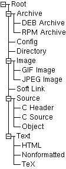

|
|
| LICENSE | GUIDE | INTRO | USAGE | CONFIG | HISTORY | CONTRIBUTING | ACKS |
As was mentioned on the file types page, each file type links to something called a style. What is a style, you ask? Well, a style is a named set of properties, where different properties control different aspects of how files associated (through the typing system) with the style are handled.
Currently, the only type of property actually implemented is the visual ones, which controls how files having the style are displayed in the pane lists. You can use a style's visual properties to define the colors and icons used when rendering the files. This allows for some serious niceness in the general look of gentoo, especially when coupled with Johan Hanson's wonderful icons. Go ahead and play!
One thing is important to realize about styles: they form a hierarchy, namely a singly-rooted N-tree. This means that no style exists by itself; all have a parent style above them in the tree. The only style which actually doesn't have a parent is, as could be expected from its name, the root one. The root style is special in more ways; it is always available (you cannot delete it!) for example. If this sounds horribly abstract and weird, perhaps this example picture can clear things up:
 |
This small tree, which is actually a cropped screenshot from the configuration window, shows the general idea of a tree hierarchy. You can see the Root style on top. Notice how all other styles sort of "hang" under the Root style; from any style you can trace a way back up to Root. Also note how the tree is sorted alphabetically on each level. This makes it easier to locate a given subtree. With a tree like this, generally only Root plus the "leaf" nodes (nodes without any children, such as "DEB Archive", "RPM Archive", "Config", "Directory", and so on) are actually bound to types. The other nodes, such as "Archive", "Image" and "Source", are not. Then you might wonder if they're not just being wasted? No, they're not! See below (on inheritance) for why. |
So, what is the point of arranging the styles into a tree? Wouldn't it be just as convenient to use a less structured model, such as the plain list used by types?
Funny you should ask that! The answer is no, and for a very good reason: inheritance. Each style contains a number of named values, also called properties. Assigning a specific value to a property is optional. If you don't assign a value to a certain property in a style, that property copies the value from its parent! If the parent doesn't assign a value either, then that style's parent is checked, and so on. Eventually you'll reach the Root, and there the search will end, because Root always gives a value to all its properties. If you go ahead and define a local value, that value is said to override the one that would otherwise have been copied from a parent.
This kind of operation, where a value is found by searching down a branch of a family tree, is called inheritance. It is a very useful way of arranging things, and is widely used, for example in object-oriented programming (languages such as Smalltalk, C++ and Java all provide support for inheritance).
The point of inheritance in gentoo is that it reduces (or even removes completely) the need to specify the same property value twice. It also naturally supports grouping; look how all styles for various image formats have been grouped under the single parent style "Image", for example. If you want all image files to be displayed with a common background color, you can just assign that color once to the corresponding property in the "Image" style, and then all specific image format styles ("JPEG", "GIF" etc) will inherit it!
One big group of properties control how files belonging to a style are displayed in the directory panes. These properties are (rather logically) called the visual properties. They are:
| Name | Type | Explanation |
|---|---|---|
| Unselected Background | Color | This is the color used as the background on unselected rows. It is normally set once, in the Root style. Changing the unselected background color in child styles is not recommended, since it can make it harder to distinguish between unselected and selected rows. But then again, it's your configuration... |
| Unselected Foreground | Color | This is the foreground (text) color of unselected rows. Generally black. |
| Unselected Icon | Icon | This specifies the name of the icon to use (for the "Icon" column content) for unselected rows of this style. The name is the filename of a small pixmap, sans path. For more information about locating icons, see the misc page. |
| Selected Background | Color | This is the background color used for selected rows. Generally the same as the unselected foreground, to create an easily recognizable "inverse video" look. |
| Selected Foreground | Color | As could be expected, this is the color used by the text of selected rows. Like the unselected background, it is generally only set once; in Root. |
| Selected Icon | Icon | Of course, this is the icon used on selected rows. If you forget to specify this, the icon will disappear when the row is selected, which might look confusing. |
Action properties allow you to control how gentoo should act upon files having a particular style. For example, you could use action properties to inform gentoo that is should use some external program to view images, and so on. These are the action properties that are available:
| Name | Explanation |
|---|---|
| Doubleclick | This action is executed when a file having this particular style is doubleclicked by the user. This action is key to gentoo's normal dirpane navigation: the style bound to directories generally has a doubleclick action property of DirEnter. |
| View | This action is used by the built-in FileView command: if a file being viewed specifies a view action, it is used in place of the built-in (which is just a plain text reader for now). |
| Edit | This action is executed by the built-in FileEdit command. There is currently no built-in default action. |
| This action is inspected and executed by the built-in FilePrint command. There is currently no built-in default. |
There is a single style built into gentoo: it has been mentioned many times above, and is generally called "Root". It defines standard values for all properties, thereby guaranteeing that inheritance from any other style will find a value sooner or later. You cannot delete the Root style, but you can (of course) change its properties, thus causing non-overridden properties in the entire style tree to change accordingly.
Unlike types, you don't need to pay any special attention while naming styles to get a convenient grouping; it is already provided by the tree hierarchy. I suggest using short names and not repeating the name of the parent in the child's name (in the screenshot above, a little bit of both has been done...).